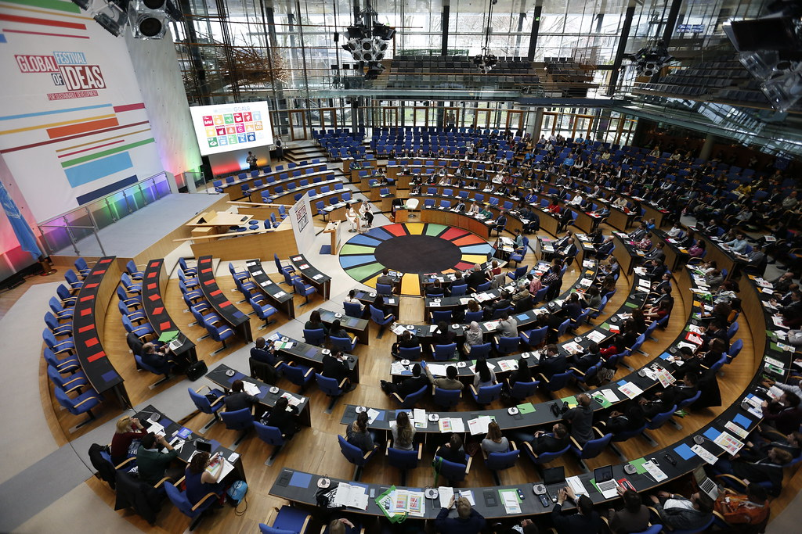
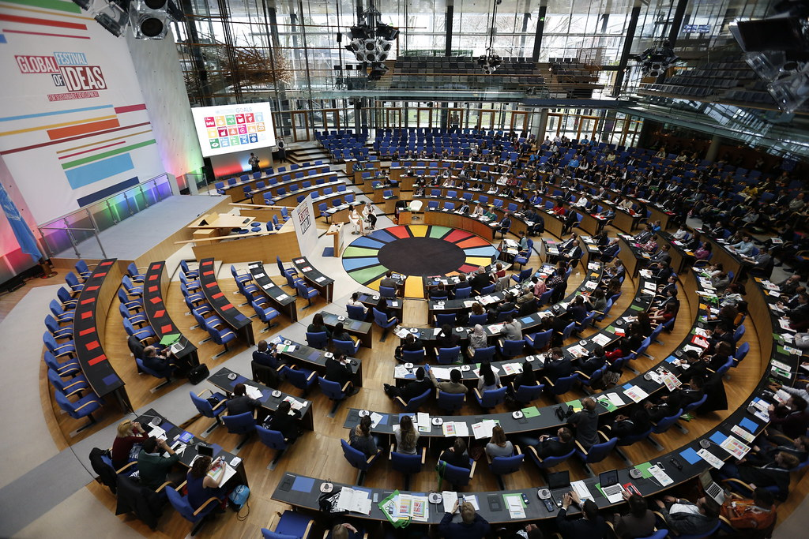

SDGs secara umum memiliki banyak sekali dampak, 17 tujuan yang dibuat oleh SDGs pun juga termasuk dalam dampak dari SDGs. Karena memang itu tujuan yang dibuat oleh SDGs dan ketika sudah terwujud dan menciptakan hasil yang baik, maka hasil tersebut merupakan dampak dari SDGs. 17 tujuan SGDs yaitu, menghapus kemiskinan, mengakhiri kelaparan, kesehatan yang baik dan kesejahteraan, pendidikan bermutu, kesetaraan gender, akses air bersih dan sanitasi, energi bersih dan terjangkau, pekerjaan layak dan pertumbuhan ekonomi, infrastruktur, industri dan inovasi, mengurangi ketimpangan, kota dan komunitas yang berkelanjutan, konsumsi dan produksi yang bertanggung jawab, penanganan perubahan iklim, menjaga ekosistem laut, menjaga ekosistem darat, perdamaian, keadilan dan kelembagaan yang kuat, kemitraan untuk mencapai tujuan.
Selain dampak dari hasil yang akan dihasilkan dari kerja sama ini. Dengan adanya SDGs, sesama negara, organisasi, hingga masyarakat dapat bekerja sama untuk mencapai tujuan yang sama, sehingga tali persaudaraannya pun semakin kuat antara satu dengan yang lain.
Dengan adanya kerja sama yang mendukung SDGs juga antara satu dengan pihak lain yang bekerja sama dapat saling bertukar informasi, bertukar barang maupun jasa, seperti dalam SDGs ke 3 mengenai kesehatan. Indonesia dapat berperan sebagai yang memberikan obat-obatan. Begitu pula dengan negara yang bekerja sama dengannya. Ketika mereka memiliki yang negara kita tidak miliki. Maka antara pihak pihak yang bekerja sama dapat saling melengkapi.
Dengan diadakannya SDGs, negara-negara di dunia bekerja sama untuk mencapai tujuan yang sama sehingga memberikan kesempatan bagi Indonesia untuk menjalin hubungan dengan negara lain sehingga dapat mengurangi kemungkinan terjadinya peperangan.
SDGs juga menjadikan kita memiliki rencana yang jelas untuk menciptakan dunia yang baik. Sehingga kita sudah memiliki target untuk 2030 yang harus kita capai. Sehingga meskipun tidak sepenuhnya tercapai, tetapi kita sudah memberikan yang kita bisa berikan, jadi masa depan Indonesia nantinya pun bisa terus maju menjadi lebih baik.
Untuk masyarakat, hasil dari SDGs akan sangat terasa ketika tujuan SDGs sudah terwujud sepenuhnya nanti. Akses terhadap pelayanan kesehatan akan lebih mudah, program gizi, dan air bersih, sehingga kualitas hidup dan harapan hidup masyarakat meningkat. kesetaraan gender dan pemberdayaan kelompok rentan pun akan semakin diperhatikan. SDGs juga mengajarkan masyarakat pentingnya menjaga lingkungan dengan cara seperti mengurangi limbah, daur ulang, dan mendukung energi terbarukan, menciptakan gaya hidup yang lebih berkelanjutan.
Jadi, dengan adanya SDGs, kita menjadi memiliki arah yang jelas untuk menciptakan dunia yang lebih baik. Karena kita semua pun memiliki tujuan yang sama untuk membuat dunia menjadi lebih baik. Apalagi SDGs juga bukan program pembangunan berkelanjutan yang ditanggung jawabi oleh pemerintah maupun organisasi besar. Sehingga kita sebagai masyarakat juga harus mengambil bagian dalam proses mewujudkan SDGs. Mulai dari langkah kecil membuang sampah ditempatnya atau mengurangi penggunaan botol plastik dan menggunakan botol minum yang bisa digunakan berulang kali saja kita sudah termasuk mengambil bagian dalam SDGs. Selain kita dapat menjalin kerja sama dalam berbagai bidang, seperti contohnya kerja bakti membersihkan lingkungan, atau sebagai pelajar kita dapat melaksanakan piket setelah pulang sekolah bersama teman. Dengan bekerja sama, kita dapat menjalin relasi dengan orang baru maupun mempererat hubungan. Dengan saling mendukung dan keinginan mewujudkan tujuan yang sama, kita akan semakin kuat dalam menghadapi tantangan ataupun isu yang ada. SDGs memberi kita harapan bahwa melalui kerja sama global, kita bisa menciptakan dunia yang lebih adil, sejahtera, dan berkelanjutan. Oleh karena itu, setiap tindakan kecil yang kita lakukan, baik itu dalam kehidupan pribadi atau komunitas, turut berkontribusi pada pencapaian tujuan besar ini.
Seperti yang dikatakan dalam peribahasa, “bersatu kita teguh, bercerai ktia runtuh”. SDGs mengingatkan kita akan pentingnya persatuan dan kerje sama dalam mencapai tujuan bersama. Setiap individu memiliki peran yang sangat penting dalam mencapai tujuan bersama untuk mencptakan dunia yang lebih baik. Jika kita, seluruh negara bersatu untuk bekerja menuju tujuan SDGs, kita akan menjadi lebih kuat dalam menghadapi isu global. Jadi, sesuai juga dengan nilai serviam yaitu “Persatuan”, tidak hanya dalam SDGs. Dalam kehidupan sehari-hari pun jika kita bersatu dan mau bekerja sama dengan orang lain maka kita akan menjadi lebih kuat menghadapi tantangan atau masalah yang akan datang.